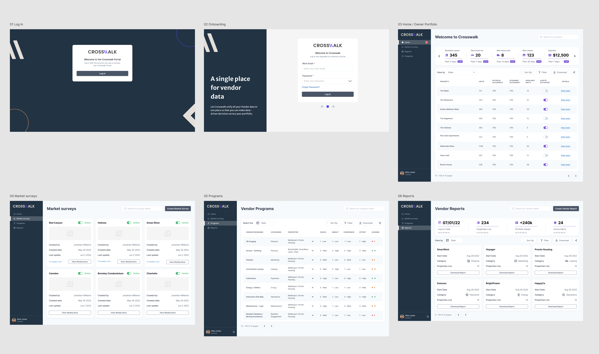
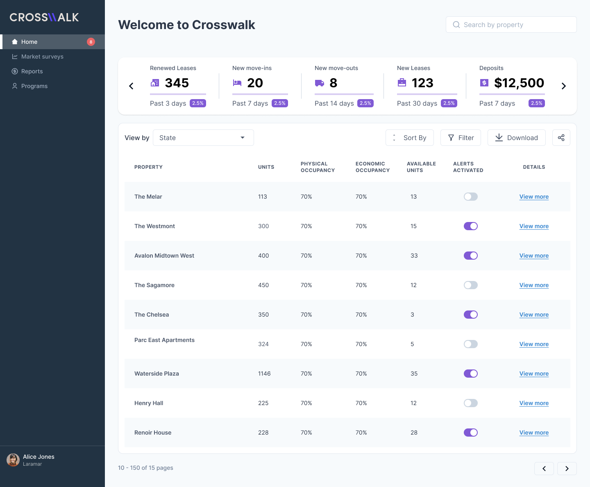
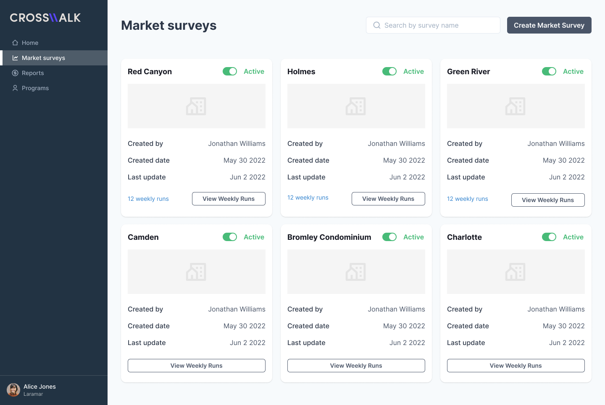
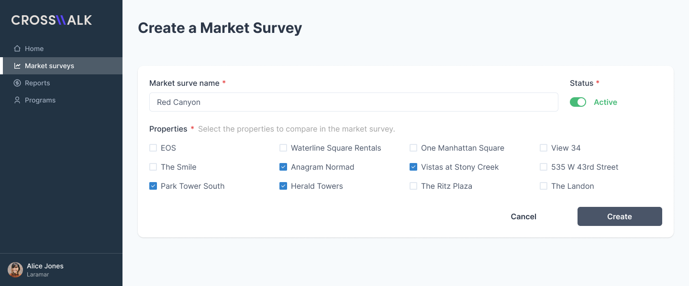

Crosswalk
Designing a commercial real estate intelligence platform from concept to MVP, turning complex property and market data into a scalable B2B SaaS experience.
Product Designer
B2B SaaS Platform
Commercial Real Estate
0→1 · Concept to MVP
01
The Challenge
Commercial real estate professionals were managing property and market information across spreadsheets and disconnected sources, making complex data difficult to monitor, compare, and act on.
Crosswalk aimed to bring this information into a single platform where agencies could manage properties, market intelligence, vendor programs, reports, and portfolio-level performance.
02
My Role
I worked as the Product Designer on the Agave Lab team, partnering closely with a Product Owner and collaborating with Crosswalk's U.S.-based Business team.
I translated business requirements, domain knowledge, and prioritized product flows into information architecture, UX, interaction patterns, wireframes, prototypes, and high-fidelity product interfaces.
I also collaborated with Engineering and QA throughout the MVP to refine the experience and support implementation.
03
From Concept to MVP
Crosswalk started as an early business concept with an existing brand identity and initial product flows. Working with the Product Owner and the U.S.-based Business team, I translated commercial real estate requirements and domain knowledge into the structure, UX, and visual experience of the MVP.
Formal user research was not part of this MVP phase, so domain understanding came primarily from stakeholders with direct commercial real estate experience.
Understand
Domain, terminology, requirements
Structure
Workflows and data relationships
Prioritize
Core MVP experiences
Design
Flows, wireframes, UI, prototypes
Iterate
Business, Product, Engineering & QA
Product Overview
The MVP brought the core commercial real estate workflows into a connected platform, spanning onboarding, portfolio management, market intelligence, vendor programs, and reporting.

04
The Product Experience
The product needed to support both high-level portfolio visibility and detailed operational workflows without overwhelming users with the amount of information available.
Home / Owner Portfolio
Combined portfolio-level KPIs with property data, occupancy metrics, alerts, filtering, sorting, and detailed property information.
Market Surveys
Supported market intelligence through structured property comparisons, survey status, creation data, and recurring survey information.
Programs
Organized vendor program information through structured tables, categories, properties, performance signals, and scoring.
Reports
Provided reporting views for portfolio impact, active alerts, property coverage, categories, and downloadable vendor information.
05
Designing for Data Density
A key design challenge was organizing large amounts of property and operational data without overwhelming users.
The experience combined portfolio-level KPIs with structured tables, filtering, sorting, status indicators, alerts, and detailed property information so users could scan performance and move into deeper workflows when needed.

06
Structuring Complex Workflows
Beyond presenting information, the product needed to turn complex real estate data into clear actions and repeatable workflows.
Market Surveys were designed to help users organize comparisons across multiple properties, while the creation experience simplified the process of selecting properties, defining survey information, and managing survey status.


07
Outcome
Crosswalk went from an early business concept to a delivered MVP for a B2B SaaS commercial real estate platform.
The resulting product centralized portfolio information, market intelligence, vendor programs, and reporting into a structured environment designed to support monitoring, comparison, and property management.
The MVP was delivered to Crosswalk and became part of the company's efforts to move the product forward and raise investment.
08
What I Learned
Domain Complexity
Learned how to translate specialized commercial real estate knowledge into understandable product experiences.
0→1 Product Design
Strengthened my experience taking an early business concept through product definition and MVP delivery.
Enterprise UX
Developed stronger approaches for designing data-heavy B2B interfaces without sacrificing clarity.
Cross-functional Collaboration
Worked across Business, Product, Engineering, and QA to translate requirements into a buildable product.